(Continued from Volume 3)
Can there be "Universal Laws of Game Design"?
Game developers whose academic upbringings can be traced back to the study of math and science may have already asked this question at least once during their lifetime, for it often brings up a bit of annoyance to be expected to simply concede the widely accepted opinion that a game, as a whole, cannot be analyzed in a purely quantitative manner because it is supposed to be an "interdisciplinary artform". After all, how could somebody even dare to question the stylish undefinability of postmodern rhetorics, which feign their own possession of intellect by hiding behind the wall of vague metaphorical connotations?
While it may sound snobbish, however, it is my personal belief that refusing to analyze a subject as a rational entity simply because of its apparent complexity is a form of intellectual laziness. No area of knowledge should be exempt from thorough examination as well as genuine endeavors to break it down into logical pieces, and the study of game design is not an exception.
In the previous volume, I undertook a series of thought experiments and came up with the conclusion that a well-designed game must be rich both in its narratives and mechanics, and that these two elements must be developed in a concurrent (mutually reinforcing) fashion so as to ensure that it is always possible to mathematically derive either one of them from the other.
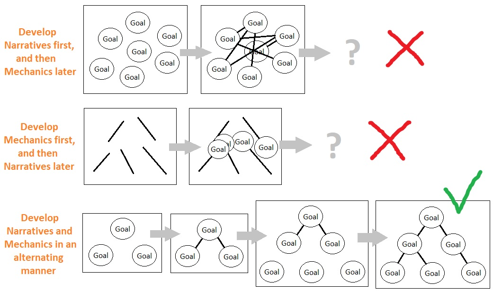The question is, how to construct a model which enables such a set of criteria?
This is indeed a tricky problem because simultaneously developing both the narratives and mechanics of the game, while also making sure that they fit each other, is prone to lure us into an endless abyss of extra definitions and arbitrary rules for the sake of resolving their mutual incompatibilities. And in order to bypass this, I have been trying to keep the abstract model of gameplay as simple as possible since the very beginning of this series.
The reason for doing this lies on the notion of "shared knowledge" and the importance of leveraging it for the purpose of reducing the boundary between narratives and mechanics.
While narratives and mechanics belong to two vastly different branches of knowledge, they both are part of one vast pool of human intellect within which their shared origin can be found. Humanity's tree of knowledge, while stretched like fungi all over the place, can ultimately be traced back to its most fundamental root called "philosophy". The ancients began to question the nature of mankind as well as the universe as soon as they were freed up from their utmost needs such as hunger, thirst, and security. They searched for the meaning of life, death, and other worldly phenomena, communicated with one another, wrote down their thoughts, and even proceeded to invent brand new languages (e.g. algebra) for the purpose of expressing their novel ideas.
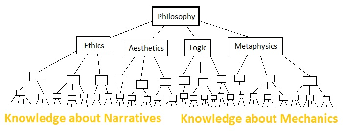As time passed by, the study of philosophy diverged itself into more specialized branches of knowledge such as ethics, aesthetics, metaphysics, natural philosophy, and so on. Then these branches recursively diverged themselves into even more specialized branches such as "physics", "chemistry", "sociology", and so forth, due to the emergence of experts who focused more on specific areas of knowledge than the entirety of what humans can think and reason with.
This process of specialization led to a great deal of misunderstanding between experts who came from different backgrounds. This has been fine for most part, especially in most of our industrial pipelines in which almost every process can be nicely encapsulated into an approximately independent area of expertise. The real problem of specialization rises when our intention is to create a multidisciplinary system such as a videogame. Since it involves fine arts, music, literature, storytelling, AI, physics, system dynamics, data science, and other fields of knowledge which differ significantly from one another yet are mutually intertwined in subtle ways, a game quickly becomes a piece of pure pain to make as soon as a group of highly specialized individuals who do not understand each other simply gather together and decide to undertake the process of developing it by means of collaboration.
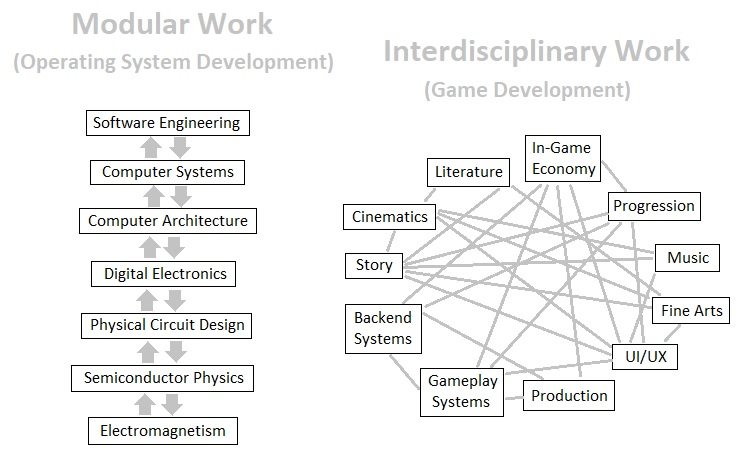Specialization of knowledge only works well for specialized areas of the industry. For designing and implementing a videogame, what we need is a group of "philosophers" who desire to understand the fundamental nature of games instead of solely focusing on their own domains of expertise. It is only when we establish a common ground of knowledge that we can start merging different fields of expertise into a single boiling pot and brew out the game as one, elegantly coordinated system.
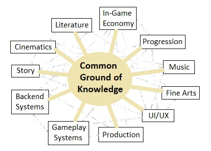And the common ground which I am referring to here is the study of philosophy, for it is a generally accepted notion that it is the root of all other studies. One question which may arise immediately is, "Okay, so you want us to design a game by using... philosophy? What do you expect us to do? Sit on a round table and take turns quoting some of the famous words of ancient Greek philosophers for the hope of discovering cool game design ideas?"
For this, I would suggest that the word "philosophy" is often being misinterpreted as an act of deciphering a pile of obscure ramblings from old academics. The study of philosophy does not have to be approached this way. Let us just ignore the preconceived notion of what the study of philosophy is supposed to be, as well as what sort of recondite terminologies we ought to employ in order to even let ourselves talk about it, and just restart our stream of consciousness from the very beginning like a new-born infant. Once we start from nothing and try to build some knowledge out of this pure state of nothingness, we will sense a hint of liberation which unhinges us from the burden of complicated theories as well as their annoying technical details. This pure development of knowledge is what I am referring to as "philosophy" within the context of this writing, and it is precisely this mode of development through which one can elaborate a common ground of reasoning that can be shared by all types of experts.
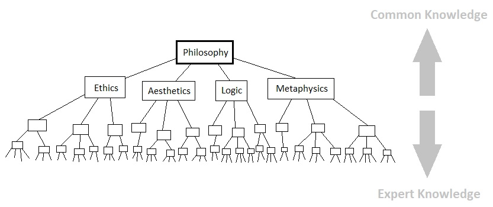This was the line of logic I had implicitly drawn in volume 1, by means of a conceptual model made out of a few abstract yet universal entities. The initial ground of reasoning did not begin with a survey of popular games or popular game design books. Instead, what I did was simply start from nothing as though I were a child without any knowledge in the game industry, and gradually construct a rational model based off of our most intrinsic values that can be deemed universal to a certain degree, such as biological instincts ("Eat", "Reproduce", "Survive", etc) as well as basic elements of geometry (points, lines, shapes, etc). The purpose of doing this was to separate out the methodology of game design from any of its areas of specialization (such as "progression curves", "intransitive mechanics", "combat design", "user experience", and so on), so as to be able to preserve its essence and keep it universally comprehensible.
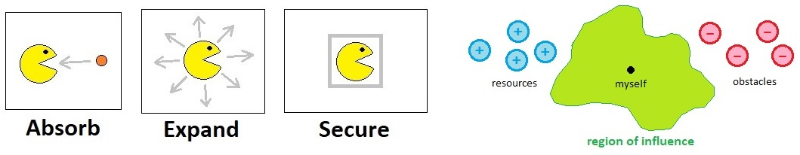The trickiest aspect of designing a game based upon such a pure faculty of reasoning, though, is that it is way too generic and therefore not directly applicable to an actual game. This means that we do require some way of ensuring that the game's abstract model, while being general enough for nearly everyone to understand, can also extend itself to a rich panorama of specific use cases. According to my observations, these two seemingly contradictory requirements can be resolved by means of the two following strategies: Mathematical Minimalism and Quantitative Expansion.
(1) Mathematical Minimalism
The key to establishing a shared model of the game, which is supposed to be comprehended by anyone regardless of their professional backgrounds, lies on the usage of concepts that are universal. In order to establish a body of knowledge which we can all share in common with ease, we must step back from specialized areas of expertise (e.g. arts, engineering, level design, economy design, etc) and start everything afresh on a blank paper.
The answer to the question of how to undertake such a task lies on mathematical minimalism. As some of us are already aware, mathematics is one of the most pristine languages of mankind which is marked by its ability to represent every definable idea in its utmost degree of abstraction. Using mathematics, we can get rid of all specialties from a body of knowledge and cut it down to its most generic form. And the benefit of this is that such a purified model is independent of any specific context which might require the observer to become an expert at a particular subject.
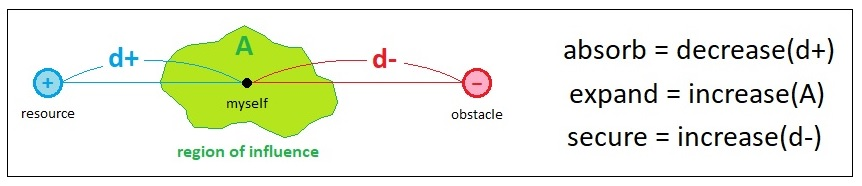Throughout the previous volumes, I have introduced a mathematical model of gameplay which only comprises 3 most fundamental goals (i.e. Absorb, Expand, and Secure) and their corresponding behavioral patterns (i.e. Decrease(d+), Increase(A), and Increase(d-)). One underlying assumption I made during the construction of these primitives was that they must all be "minimal" in terms of computation, so that even people who are not well-versed in the study of math will be able to understand the model fairly easily. If I introduced rather more advanced concepts such as rigid bodies, colliders, pathfinding, force/acceleration, local avoidance, and myriads of other topics in hard science, their ensuing complexities would have quickly overwhelmed the viewer and created an impression that the whole model is supposed to only belong to one specialized branch of knowledge called "engineering" and thus should be ignored by others.
In order to stay at the root of the tree of knowledge (aka "philosophy") instead of straying off to piles of petty technical details, what I did was to make sure to exclude any of the advanced mathematical techniques from the scene while still leveraging the power of math to represent our core concepts in the most shareable format as possible. Such a mode of development is what I would call "mathematical minimalism"; it is "mathematical" because every one of its constituents is rationally defined, and "minimal" because it describes every relation among its constituents as a simple measure of distance in space (which is the most minimal metric one can typically think of, regarding the relationship between two spatial entities).
We could have undertaken the journey of analyzing the relationships between objects by means of complex metrics such as: "The smallest weighted cost of traversing a path which starts from point A and ends up at point B", "The amount of energy it takes to move a unit mass from point A to point B", "The expected amount of damage the player will receive while travelling from point A to point B at its maximum possible speed", and so forth, but such details are non-fundamental and can be elaborated later on based off of the original question: "How to decrease the distance between A and B?".
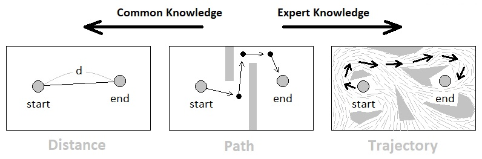The problem of implementing a pathfinding algorithm, for example, is important for engineers but not necessarily important for designers. The problem of defining whether the player's goal pertains to the matter of reducing the distance between two particular objects, however, is such a fundamental description of what is happening within the game, that it must be understood by both engineers and designers.
(2) Quantitative Expansion
It seems obvious that a purely mathematical model of a game, while being easy to understand without any specific background knowledge, is not sufficiently capable of letting the designer come up with a gameplay prototype that is rich in context. And the cause of this lies primarily on the apparent over-simplicity of the initial model which prevents us from expanding the game's possibility space into richer and richer contextual domains.
A feeble attempt I had previously made was to introduce a bunch of new qualitative elements to the scene, with the expectation that they will somehow allow us to enrich the game's design framework in a fairly consistent manner. This approach, however, quickly turned out to be not quite tenable due to the inherent dissonance between their qualitative nature and the attempt to analyze them quantitatively.
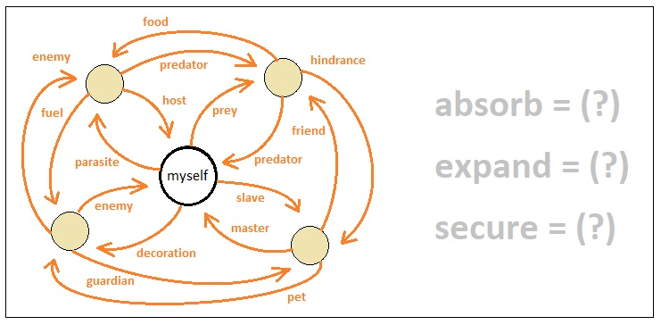The main problem is that, when we add something qualitative to the system (as opposed to quantitative), we cannot seamlessly integrate it into the system's computational structure due to its inherent incompatibility. Relations such as "prey", "predator", "ally", and "enemy", for instance, are measures that cannot be reduced to rational definitions without making a truckload of arbitrary assumptions, and thus are prone to confound us with an infinitely wide spectrum of complexity. As a result, we naturally come to the conclusion that the system must always exclude any irrational concept from its domain of reasoning for the sake of preserving its sanity.
Such a line of logic is what I would refer to as "quantitative expansion". We do need to expand the system of gameplay beyond its initial stage of conception in order to let it present the audience with scenarios that are more sophisticated than mere geometric figures pulling/pushing each other, yet we must always be careful not to do so by adding brand new concepts that cannot be represented in terms of mathematical definitions. Instead, we must augment the system solely by recombining its existing elements in a strictly quantitative fashion, for it is the most sensible way to assure that everything within the scope of the system will still be reducible to computational rules.
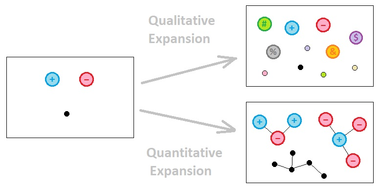So, how shall quantitative expansion be done? What has been proven so far is that mere introduction of subjective terms such as "ally", "enemy", "prey", and "predator", without definitions which pertain to the domain of computability, has a tendency of halting the advancement of one's design process due to their semantic ambiguity. According to my viewpoint, the way to overcome this difficulty consists of the following two criteria: (1) Exclusion of External Observers, and (2) Additive Composition.
(1) Exclusion of External Observers
In the previous volume, I have mentioned that the universe as a whole can be broken down to multiple parallel universes, each of which corresponds to the set of interpretations made by each of its constituent observers in regard to its surroundings. The main source of complexity which we have clearly perceived was the attempt to treat multiple relations among multiple observers as parts of a whole and label it with a unique name. The downside of this approach was that, since each observer belonged to its own separate parallel universe, trying to combine the semantic implications of two or more observers led us to the problem of merging two or more parallel universes together into one unified continuum (which created countless rooms of obscurity).
The solution to this is to avoid simultaneously considering the implications of multiple parallel universes and just focus on one of them - that is, only look at one particular observer and its outward relations at a time when determining its behavior, and simply ignore the perspectives of everyone else ("outward relations" mean the ways in which others are being interpreted by the observer of our interest, as opposed to the ways in which the observer is being interpreted by others).
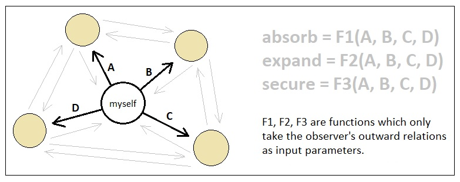This simplifies the problem by orders of magnitude, as it forces us to deliberately ignore the subtleness of meaning which may arise from a complex network of relations by excluding both circular and indirect connections from our domain of reasoning. All we need to care about when computing the goals/actions of an object, in this model, is its relations to others and nothing else.
(2) Additive Composition
So far, we have been assuming that each observer is a single mathematical point in space. This of course is a rather bold generalization which I have hitherto been carrying on for the sake of utmost simplicity, and is now turning out to be quite inadequate for expanding our gameplay system. If we consider every distinct object as a single point, the only shades of contextual diversity we will be allowed to add are only those that are qualitative in nature. In order words, if everything in our universe is an atom (i.e. indivisible entity), the only modification which can enlarge this universe's possibility space is to introduce brand new types of atoms, whose ensuing potential relations to the existing types are a bunch of arbitrary rules we have to specify thoroughly in a painstaking manner (which is extremely tedious and prone to contradictions).
Because of this limitation, we must consider the possibility of representing each individual object of our game world as a composition of multiple atoms instead of just one. This obviously gives birth to a certain level of complexity, but it is a kind of complexity which can be analyzed in a purely additive manner under a set of carefully crafted disciplines. By "additive", what I mean is that the behavior of a whole is equal to the sum of the behaviors of its parts.
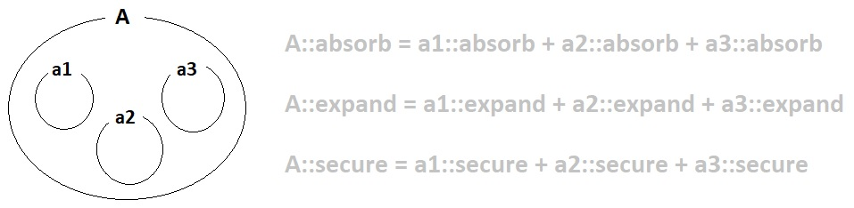As long as every object in the gameplay universe is an additive composition of atoms, we can always derive the exact behavior of any object from the individual behaviors of its component atoms; algebraically, it is only a matter of summation as long as those individual behaviors are quantitative entities (e.g. numbers, vectors, matrices, etc). If we want to identify the behavior of a complex object, all we need to do is just identify the primitive behaviors of its atoms and then add them up; the resulting sum must be equal to the overall behavior of the object.
How the aforementioned principles will help in case of practical applications, though, is another question we must answer. In the next volume, I will go over a couple of specific examples to demonstrate a way in which the principles shown so far can contribute to the process of game design.
(Will be continued in Volume 5)